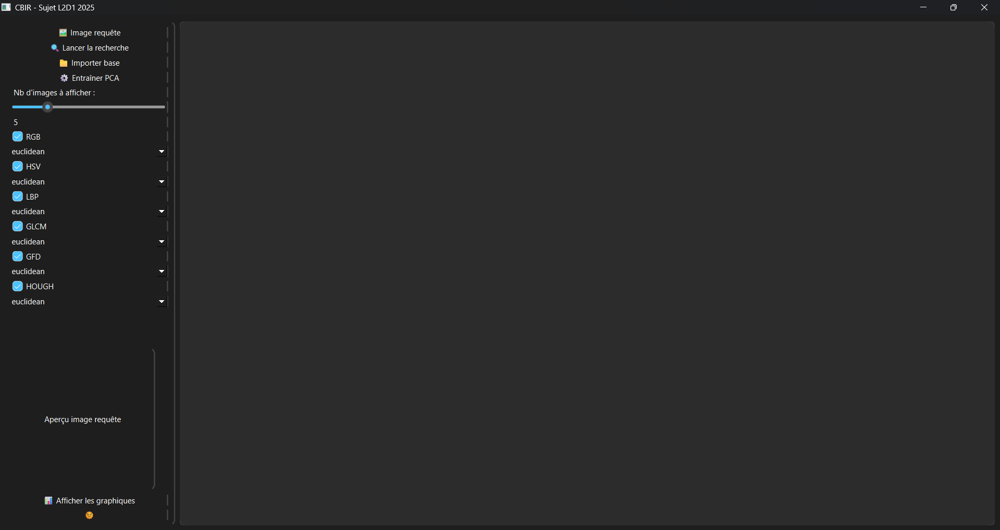
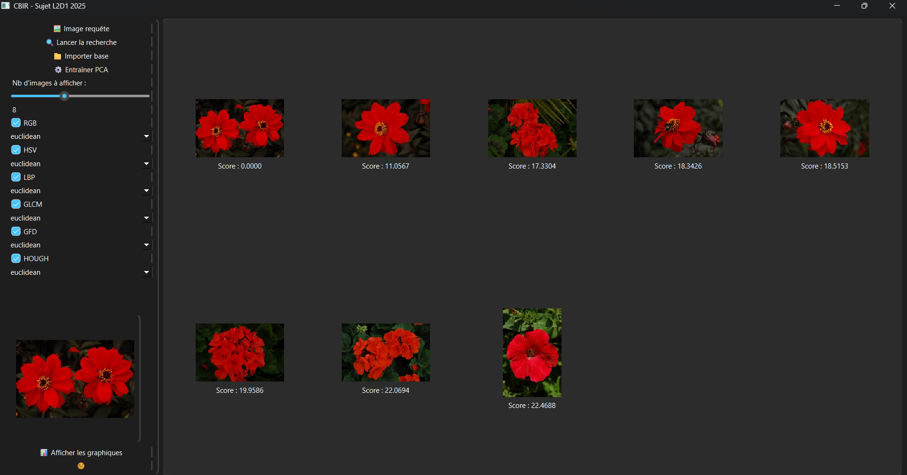
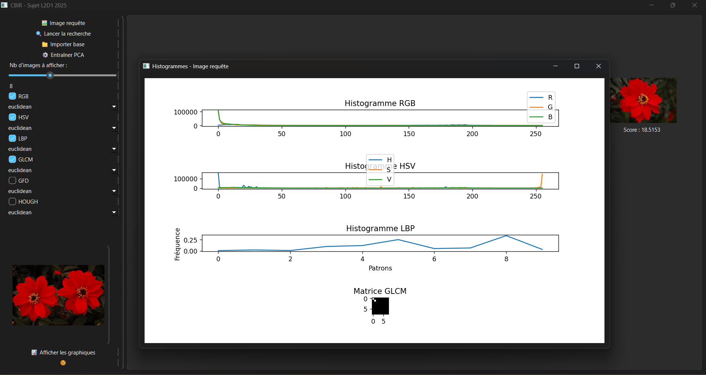
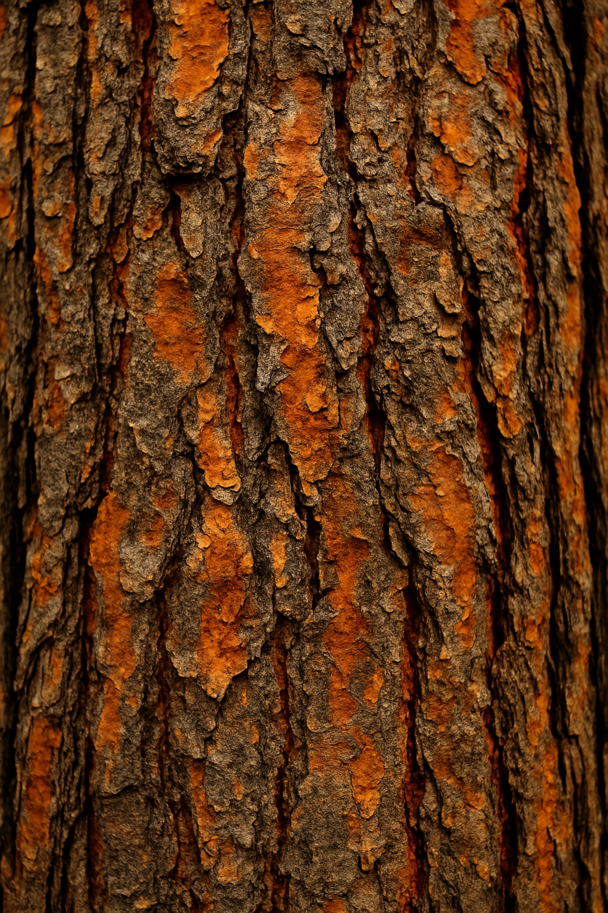

Fonctionnalités Clés
🔎 Recherche Visuelle
Trouvez instantanément des images similaires basées sur couleur, texture et forme.
📊 Analyse & Graphes
Affichez histogrammes HSV/RGB et vecteurs caractéristiques pour chaque image.
🧠 Classement Intelligent
Organisez vos résultats par similarité ou catégories prédéfinies.
Aperçu de l'Interface ✨

📥 Importation

🔍 Résultats

📊 Histogrammes & Clustering
- 🏠 Dashboard : capture de votre interface principale.
- 🔍 Importation & Recherche : sélection descripteurs, distance et lancement.
- 📈 Histogrammes & Clustering : visualisation des caractéristiques et regroupements.
✨ Comment ça marche 🍂✨
Prenons un exemple avec une image d'automne… 🎃
🍁 Image de référence
📊 Histogramme HSV de l’image
🍃 Feuille en gros plan
🌲 Arbres dans la brume

🌳 Écorce d’arbre
🔗 Clustering hiérarchique
Avis Utilisateurs
« CBIR a transformé notre façon de chercher des images, c'est rapide et précis ! » 😊
« L'analyse de texture et couleur est bluffante, un must pour tout graphiste ! » 🎨
« Intégration facile et interface intuitive, je recommande chaudement. » 🚀